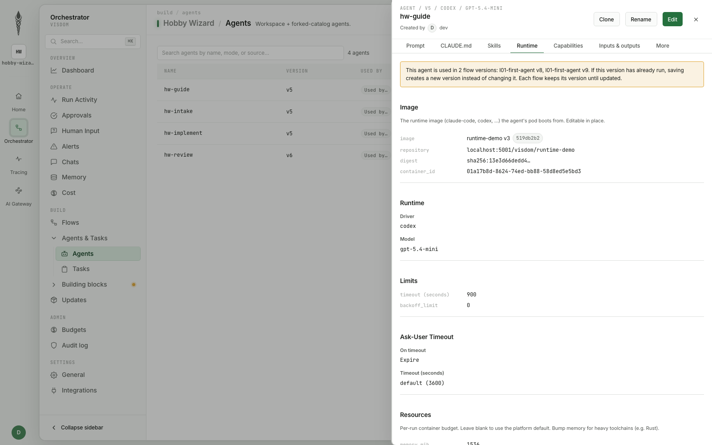
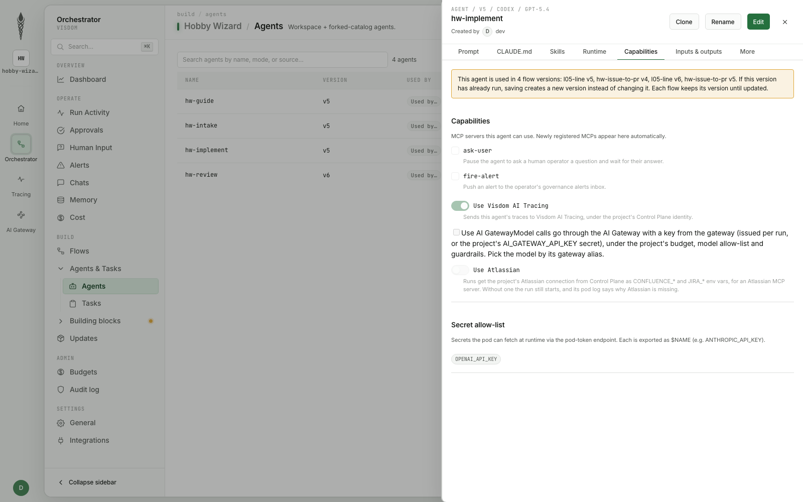
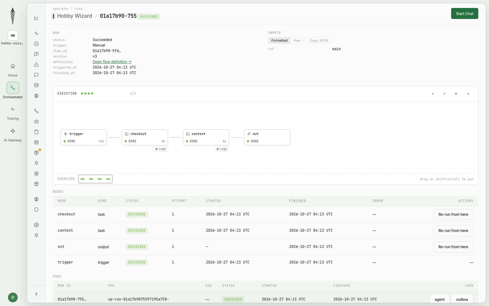
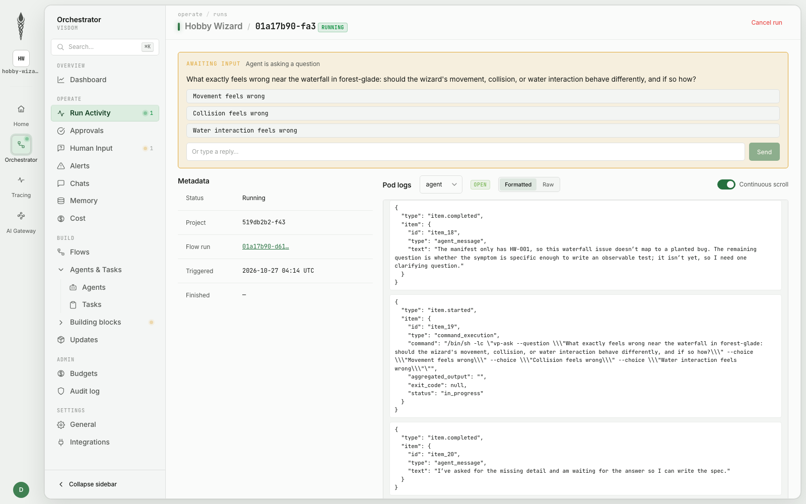
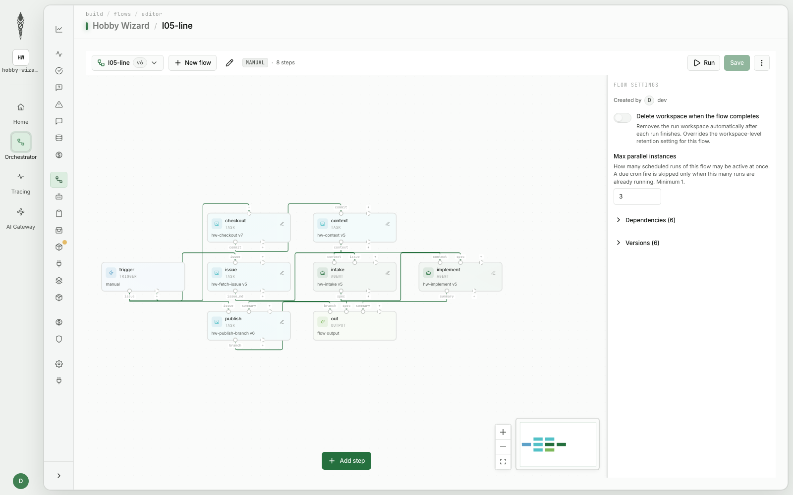
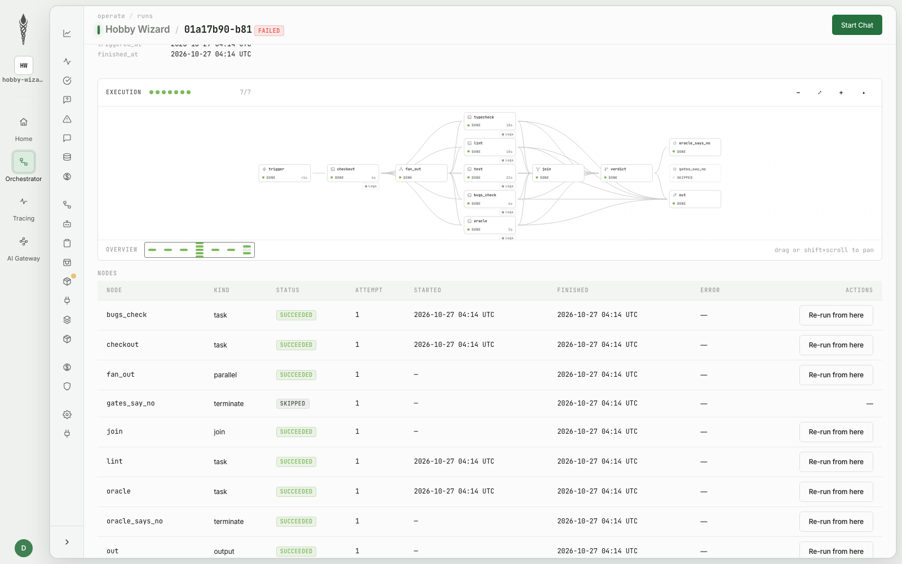
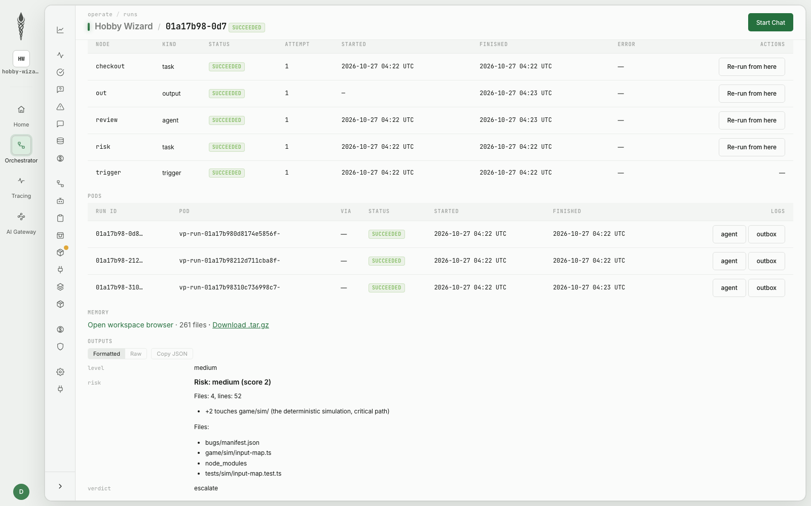
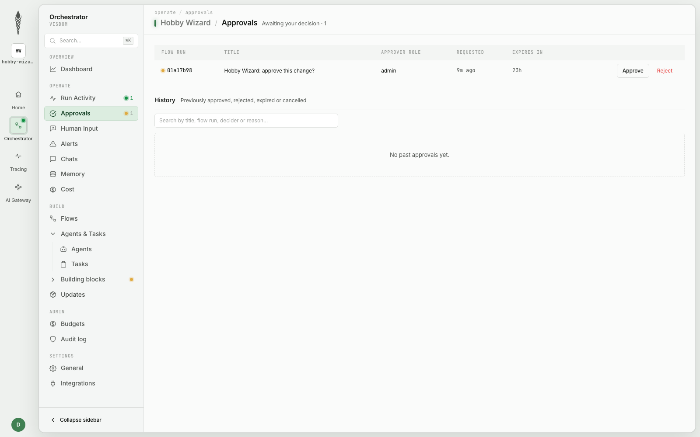
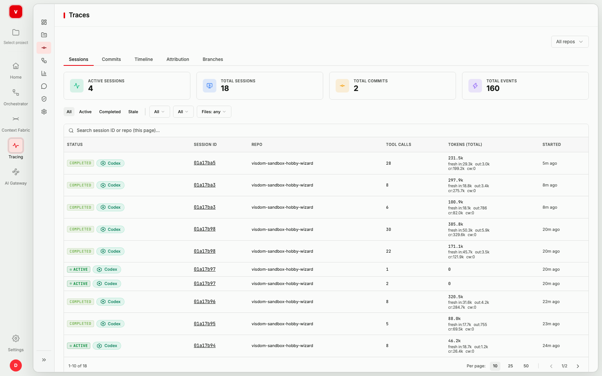
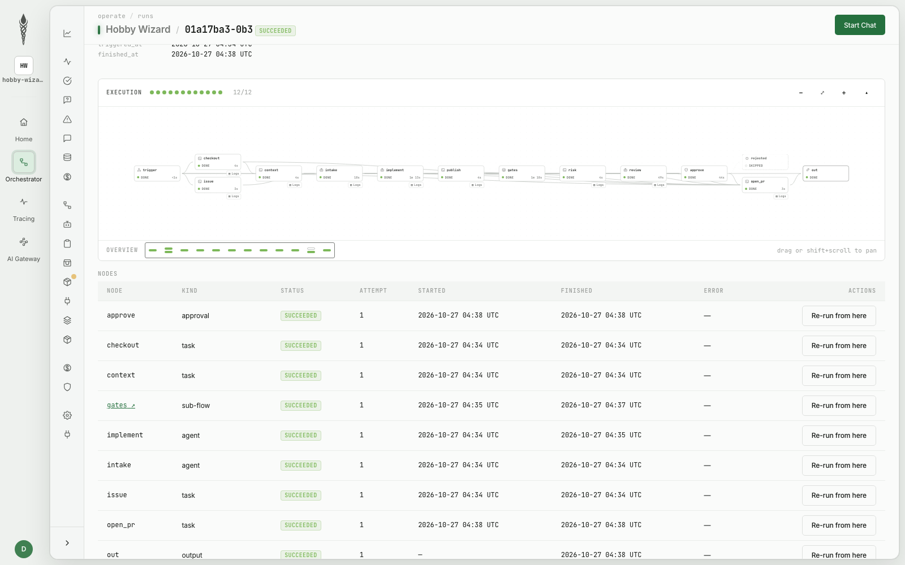

People write specs and scenarios. Agents write code. The factory decides where the lights go on.
We build a working software factory on Linux Foundation projects, in a kind cluster in your codespace: from intake to a signed ledger. Next to every block we show the same thing running in Visdom, VirtusLab's AI-native SDLC platform. 120 minutes, 10 lessons, about 14 reveals.
You can buy change production with a credit card. Acceptance is still done by people.
For 50 years both sides grew together, because the same people did both in the same hours.
An agent: roughly 0.5-1 USD per run on a Sonnet-class model. A second agent is a second manifest.
Acceptance: a handful of people who know why this module looks weird. You can't hire them in a quarter.
Ten lessons, one line. Each is one commit, one thesis and one exercise.
| min | lesson | thesis | in Visdom |
|---|---|---|---|
| 0:07 | 1 · Cluster and first agent | An agent is a cluster resource, not a script someone runs by hand | AgentDefinition |
| 0:17 | 2 · Workshop and tools | Agent permissions are a tool list, not a prompt | tools, egress, AI Gateway |
| 0:25 | 3 · Context L1-L5 | Owning a concept beats word frequency | agent docs, Context Fabric |
| 0:34 | 4 · Intake | No spec, no work order | ask-user |
| 0:44 | 5 · The line | The line is a versioned graph, not a script | FlowTemplate |
| 0:56 | 6 · Quality control | A green build only proves the model agrees with itself | deterministic gates |
| 1:06 | 7 · The oracle | A holdout wears out with every use | holdout node |
| 1:17 | 8 · Risk, review, rework | Every rework moves the agent from the requirement to the gate | review-fix loop |
| 1:28 | 9 · Lights, WIP, policy | A human is a node with a role; a file draws the line | approval node |
| 1:39 | 10 · Trace and the floor | An agent may propose laws, never pass them | TraceVault, audit log |
Fell behind: factory lesson 4, or factory autopilot 4 (Claude Code does the exercise and explains).
You build it on Linux Foundation projects. We show the same block running in Visdom.
| layer | your codespace | foundation |
|---|---|---|
| cluster | kind, Kubernetes | CNCF |
| agents | kagent | CNCF Sandbox |
| protocols | MCP, A2A | Agentic AI Foundation |
| line | Argo Workflows | CNCF Graduated |
| policy | Kyverno | CNCF |
| traces | OpenTelemetry, Jaeger | CNCF |
| signature | Sigstore cosign | OpenSSF |
Visdom track: orchestrator, Control Plane and TraceVault in a kind cluster in the demo environment, on Hobby Wizard, a game where a GitHub issue is the only way to fix a bug.
Cluster and first agent
An agent is a cluster resource, not a script someone runs by hand.
An agent is a cluster resource, not a script someone runs by hand. It has a manifest, a version, an owner, limits and an address.
The kagent controller turns an Agent CRD (platform/kagent/agent-probe.yaml) into a Deployment, a Service and an A2A endpoint. The mechanism you have used for years to deploy services now deploys agents.
The agent card (/.well-known/agent-card.json) tells the line and other agents what this agent can do.
A manifest goes through the same review as code. Who approves a prompt change in your team today?
An agent without tools is an instruction with an address. A good instruction gives questions, a bad one gives an essay.
A good instruction asks about numbers (the second jump's velocity, in ticks or tiles), about edge cases (a jump off a ledge in coyote time, the water, a respawn) and about what gives the second jump back. In lesson 4 this agent stands at the start of the line.
Honest gap: kagent's port 8083 has no authentication, identity is an X-User-Id header. In production a gateway stands in front of agents (agentgateway, also LF). Today we stay inside the cluster.
Without a model key the agent starts but does not answer. The factory has replay mode for that (lesson 5). factory check 1 tells you when you're done.
In Visdom an agent is a versioned definition. Every run is a fresh pod with a pinned image.
| you built | Visdom |
|---|---|
| Agent CRD | AgentDefinition, forked from a template, published as version N |
| ModelConfig | runtime and model per agent: here Codex on gpt-5.4-mini, OpenAI key |
| Deployment, always on | one pod per run in visdom-runs, image pinned by digest |
| kubectl apply | YAML in git (config-as-code) or the UI; merge = publish |

Workshop and tools
Agent permissions are a tool list, not a sentence in a prompt.
The prompt says "don't touch the gates". The server says "you can't". Only one of those survives Friday.
Agent permissions are a tool list, not a sentence in a prompt. The builder has five tools of the MCP server workshop: list_files, read_file, write_file, run_build, git_diff.
Protected and hidden paths are enforced by the server, not the prompt. Every call leaves a trace in /work/events.jsonl.
The server runs from an MCPServer CRD (kmcp). kagent discovers the tools itself.
Take permissions away first, then hand out autonomy.
| who | gets | does not get |
|---|---|---|
| builder (Agent) | model key, five workshop tools, a repo copy on /work | shell, git, cluster token, writes to sdlc/, platform/, scenarios/, system/architecture/, system/bugs/tests/ |
| line steps (Argo) | the same disk, the factory-toolbox image, A2A to the kagent controller | the model key: only the agent pod sees it |
| quality control | read only, after the agent | any influence from the agent: it doesn't read its prompt, gate files are protected |
| ledger | the cosign key from Secret factory-cosign | code from the agent's branch to execute |
Honest gap: the agent pod sees the model key and has egress. In production: a gateway holding the key per run, egress only to the gateway. Kyverno guards the tool list (lesson 9).
Secrets are allow-listed per agent. The executor gets the model key and nothing else; only scripted tasks hold the git token.
| you built | Visdom |
|---|---|
| MCPServer + toolNames | tool permissions per agent, required MCP servers |
| PROTECTED_PATHS | deterministic steps own the gate files; agents never see them |
| key in a Secret in the pod | project secrets on a per-agent allow-list; checkout and publish are scripted tasks with the git token |
| open egress | egress allow-list per agent (NetworkPolicy in production) |

Context L1-L5
Context is compiled once, not discovered on every run. Owning a concept beats word frequency.
A visitor's report talks about keys and the keyboard. That's why a green build lands in the wrong module.
| module | owns concept | score | hits |
|---|---|---|---|
| render | none | 36 | arrow×9 key×9 creature×6 |
| sim | none | 15 | creature×6 jump×3 charge×3 |
| after the exercise: "owns": ["creature", "controls", "movement", "physics", "simulation"] in system/game/sim/module.json | |||
| sim | creature | 15 | wins despite the lower score |
HW-001 (orders/hw-001.md): with the creature on the hat, left and right swap. The renderer reads the keyboard, but the bug lives in game/sim/input-map.ts. ADR-011: game/sim is the critical path, tick(state, input) is the only writer of the world.
Owning a concept beats word frequency. You fix routing with data, not with a prompt: at ten agents a prompt doesn't scale like a catalogue.
Context is compiled, not discovered. And the owner in CODEOWNERS is not the one who knows the code.
| level | from | example in the repo |
|---|---|---|
| L1 system | module catalogue, module.json | blast radius of sim; sim is critical |
| L2 code | system/AGENTS.md, ESLint rules | the because text in system/architecture/rules.js lands in AGENTS.md |
| L3 people | git log vs CODEOWNERS | nominal: @hobby-wizard/* teams; actual: visdomorchestrator[bot] ~90%, Tomasz Łuczak the human |
| L4 decisions | system/docs/plan/01-decisions | ADR-001..010, ADR-011 "game/sim is the critical path" |
| L5 operations | ops/incidents | INC-2026-09-30, the wizard hangs mid-air |
Most tools stop at L1-L2. Only L3 and L4 say where a change should land and who will judge it.
All of it is computed by sdlc/context.py: no model, no randomness. The output is AGENTS.md for the agent and .sdlc/route.json for the line. Same commit, same result.
Context ships with the agent version, so a run is reproducible: same version, same context.
| you built | Visdom |
|---|---|
| context.py → AGENTS.md | a scripted context task, no model; its output is a typed port the agents read |
| route.json | a decision node in the flow reads the routing output |
| git log owners (L3) | who touched what, per session, from TraceVault attribution (lesson 10) |

Intake
No spec, no work order. The factory sends it back with questions.
The factory doesn't accept a work order without a spec. It sends it back with questions instead of guessing.
The bottleneck moves from writing code to writing specs. The decision is deterministic (sdlc/intake.py: regexes and routing). The intake agent only phrases the questions. It does not decide.
Work orders are files in orders/*.md. A file in the repo goes through review like code.
Yield drops with order size. Concepts from two owning modules usually mean two orders.
An agent can stop a run and ask a person. The question and the answer stay in the run history.
| you built | Visdom |
|---|---|
| intake.py decides | a decision node (CEL) decides, the agent only writes |
| questions in the terminal | Human Input: the run waits, the question and the agent's reasoning show up in the inbox |
| orders/*.md | an issue in the repo (Gitea in the demo cluster, GitHub in production) |

The line
The line is a versioned graph, not a script. The agent is one replaceable node.
The line is a versioned graph, not a script. The agent is one node of the graph, and it is replaceable.
Every step is a container with the same factory-toolbox image and the same /work disk; only the script differs. Argo Workflows draws the graph, keeps the logs and can stop a run on a human (lesson 9).
The line outputs a patch, not a PR: make fetch pulls .sdlc/out/hw-001/attempt-1/change.patch off the cluster: game/sim/input-map.ts fixed, the HW-001 entry gone from bugs/manifest.json. Line steps have no model access; only builder calls the agent, via A2A.
Same agent, same prompt, different context: the fix lands in a different module. Context changes the result, not the prompt.
With owns from lesson 3 the change lands in game/sim, where the input map lives. Go back to an empty owns: the same agent patches the keyboard in the renderer, tests green, module wrong.
Every model and tool call is in Jaeger (PORTS → Jaeger, 16686, service builder). The floor sees steps, the trace sees the conversation.
The change hasn't passed any check yet. The agent's green build is not a gate (lesson 6).
The same idea as a product: a versioned flow graph, agents as replaceable nodes, the graph lives in git.
| you built | Visdom |
|---|---|
| WorkflowTemplate | FlowTemplate: trigger, agent, decision, sub-flow, approval nodes |
| agent=kagent | replay | swap the agent node to another version or runtime |
| make order O=… | an issue label (webhook), a cron trigger or Run starts the flow |
| Argo UI | flow run view: node state, outputs, pod logs |

Quality control
A green build only proves the model agrees with itself.
A green build proves only one thing: the model agrees with itself.
Architecture rules in system/architecture/rules.js: structure in milliseconds, no model, no network. The because text is also read by the agent in AGENTS.md.
sdlc/mutation.py: small faults only on the changed lines, vitest related per mutant. It measures the tests, not the code. Below 50% the gate is red.
A removed expect, it.skip, it.only, a deleted test, an edited paired test of a planted bug. The cheapest way to "pass" a gate is to weaken the test. Plus gitleaks for secrets.
make naive: a startle with Math.random() in game/sim/tick.ts passes every gate green, and a replay stops being a replay. The gates are a quality DAG after the change step: outside the agent's container, on files it can't change, not reading its prompt.
Your test framework talks to your agent.
Tool output is model input. The builder gets the build log through run_build and would read an order to ignore the property-test results. That's prompt injection delivered from a package registry, and npm is no different.
The gate runs outside the agent, so the text doesn't change it. The build report (sdlc/gates.py report) catches such inserts and shows them in the gate report. jqwik 1.9.3 is clean.
Gates are deterministic nodes. No model, no prompt, run in parallel after the agent, and the agent can't edit them.
| you built | Visdom |
|---|---|
| quality DAG | parallel gate nodes, a join waits for all of them |
| gates.py, ESLint rules, mutation.py | mode: deterministic tasks: a script, no LLM |
| quality-N-*.md | gate outputs as typed ports on the run, shown to the approver |
The oracle
Scenarios the agent never sees. A holdout wears out with every use.
The September incident comes back in a patch. A scenario catches it before anyone reads the code.
| the startle, attempt 1 | result |
|---|---|
| 10 lines in stepPlayer, readable, agent's own tests | ✔ green |
| typecheck, lint with sim_is_deterministic, weakening, secrets | ✔ green |
| scenario "The buttons do nothing for CREATURE_STARTLE_TICKS after the creature climbs on" | ✔ |
| scenario "The buttons work again on the tick after the startle" | ✔ |
| scenario "A startle that begins in the air still falls and lands" | ✘ |
| vault scenarios/vault-startle | not opened |
The agent returned early from stepPlayer while startled. That stops the buttons, and gravity with them: a startle in the air leaves the wizard hanging there.
INC-2026-09-30: the same class of bug. Victory stopped the whole player step, the wizard hung mid-air, the change was short and read well.
Product writes the scenarios. The oracle task always takes them from main, never from the change branch, and stages them into system/.oracle/.
Every bit of feedback about a scenario is a leak. A holdout wears out with every use.
Working scenarios: their names go back to the agent. Code, assertions and data never do.
The vault: a verdict only. Zero feedback. A failure pulls the andon, because a rework "for the vault" would turn it into a training set.
The same thing as reusing a test set in ML: adaptive overfitting to the oracle.
The factory's capital is the oracle, not the agent: everyone has the same models.
The holdout is a node the agent never meets: scenarios from main, a verdict on the way out, names only on the way back.
| you built | Visdom |
|---|---|
| HIDDEN_PATHS | scenarios never mounted into the agent's workspace |
| oracle from main | a deterministic holdout node checks out scenarios from main |
| vitest scenarios on tick() | main's paired bug tests run against the branch, the answer is pass or fail |

Risk, review, rework
Code computes the risk. Every rework moves the agent from the requirement towards the gate.
The factory sends a change back for rework by itself. And every rework raises the risk.
A rework moves the agent from the requirement towards the gate. That's why the attempt number is a risk signal and the test-weakening detector blocks the change. The whole history is one graph on the floor.
Andon after max_attempts (2) or a vault failure: the workflow ends with an error. The line stops and holds a WIP slot until a human takes it off.
Code computes the risk, not the model. The model reads only when the risk deserves it. And it only advises.
| signal | pts | from |
|---|---|---|
| gate or oracle changed | +7 | gate_paths in policy.json |
| critical path | +4 | module.json, ADR-011 |
| sensitive file (bugs manifest, rooms) | +2 | sensitive_paths |
| no scenarios for the order | +2 | scenarios/index.json |
| code without test changes | +2 | diff |
| incident in module, many changes in 30 days, author: agent | +1 | ops/, git log |
| rework number N | +N−1 | parameter attempt |
Prompt injection in the diff can't lower the risk, because the model doesn't compute it. LLM lenses only above a threshold (llm_from_level), DET-* regexes always (DET-004: the tuning table in constants.ts is frozen).
Reveal: the oracle only knows the startle. Rule LLM-002 lets the reviewer read every future hold for the incident's class of bug: "anything that holds the wizard still holds his input only; gravity, the water and the props go on". Victory, a cutscene, a pause: no scenario yet, the rule already covers them.
Precision over recall: at most 5 findings, confidence ≥ 0.6. A blocking finding escalates to a human: the model advises, the human decides.
Risk is a scripted task. The review agent only advises, and here it caught what the gates missed.
| you built | Visdom |
|---|---|
| risk.py | a risk task: +2 for game/sim/, the critical path → medium |
| reviewer + lenses | a review agent (gpt-5.5): a committed node_modules link |
| model advises, human decides | verdict escalate → the approval in lesson 9 |

Lights, WIP, policy
A human is a node with a role, and a versioned file draws the line.
A human is a node with a role, not a tax on every change. A versioned file draws the line.
One suspend step and the run turns yellow on the floor. make approve sets who and resumes; your name goes into the ledger signed by cosign.
Without that step the human template passes, and the factory records honestly: human.approval_missing, change not accepted.
Lights-out only with scenarios. Low risk without an oracle still goes to a human. hud-speed (game/render, has scenarios) goes lights-out.
More agents stretch the lead time, they don't add throughput. The factory has to pull, not push.
L = λ · W
Agents: 20 changes an hour. People accept 6. The queue grows by 14 an hour, branches go stale, conflicts and reworks pile up.
In the cluster: an Argo semaphore on the run (platform/line/wip.yaml). The fourth order waits as Pending and starts by itself when a slot frees up.
Exercise B: a Kyverno ValidatingPolicy (CEL, platform/kyverno/agent-tools.yaml) rejects an agent with role builder that has a tool outside the workshop server or another agent as a tool.
An approval node with a role, an expiry and two exits. The approver sees the evidence, not the chat.
| you built | Visdom |
|---|---|
| wait suspend + make approve | approval node: approver role, expiry falls through to rejected |
| who → ledger | decision, reason and who decided go to the hash-chained audit log |
| policy.json autonomy | a decision node routes low risk past the approval |
| Argo semaphore | max parallel instances per flow |

Trace and the floor
Every event is a signed, chained line. An agent may propose laws, never pass them.
Change one word in the ledger and the chain shows which line. The signature stops matching the file.
Every event holds the hash of the previous one: intake, prompt, tool call, commit, gate, decision, approval. The same ledger holds holdout.peek and gate.tamper_attempt.
The ledger step signs the file with the factory key (cosign sign-blob) and records a hash of the line config: the line must be repeatable even though the worker isn't.
kagent traces (OpenTelemetry) in Jaeger: every model and tool call.
An agent may propose laws, but it may not pass them.
A new gate changes every future decision of the factory, so it touches gate_paths, gets critical and waits for a human. Factory quality grows with the number of defects turned into rules, not with model quality.
The factory's capital is the oracle, not the agent. The agent driver (sdlc/agent.py) is about 150 lines. Everything else (context, intake, gates, risk, ledger, oracle, cluster manifests, line) is about 2900. You swap the agent with one parameter.
Every agent session is recorded, every line of code traces back to the session that wrote it, and the chain verifies.
| you built | Visdom |
|---|---|
| Jaeger traces | TraceVault sessions grouped per run: transcript, tool calls, tokens |
| tools.jsonl | line-level attribution: which session, which model wrote this line |
| ledger + cosign | sealed commits and a verified chain; a hash-chained, signed audit log in the orchestrator |

Hobby Wizard and the hidden bug
A player files an issue. The factory fixes the game, a human approves, a pull request waits.
A player files an issue. Visdom fixes the game, a human approves, and a PR is waiting.
Your finale does the same on your fork: make github, make issue O=hw-001 (labels bug, planted, the same the game's "Raise ticket on GitHub" button sets), make pull AGENT=replay → a PR from agent/issue-N with label factory:human (critical path: fix PRs stay open for a human), checked by GitHub Actions (gates, oracle, review, provenance), with the ledger in .factory/.
- An issue with a label starts the flow
- An agent implements, deterministic gates check
- Review-fix loop, then an approval if risk says so
- PR opened (in production: with a preview URL)
- Session in TraceVault, decision in the audit log
The game itself is being built by Visdom from tickets alone, unattended: 61 issues in 4 milestones.

This room for two hours: how much the agents produced, and how much the factory accepted.
On the projector: Argo UI (PORTS → The floor, 2746), namespace factory, next to the Visdom runs view.
Every run: where each order is, what waits for a human (yellow), what stopped on the andon (red), what went lights-out. The gap between "produced" and "accepted" is the opening thesis, this time on the room's data.
Two metrics for Monday. Human minutes per accepted change, counted upstream too: specs, scenarios, andons, not just review.
Escapes: defects that went through the factory. Without attributing a defect to a change there is nothing to "earn" autonomy from.
Build it yourself on open projects, or run it as a product. The building blocks are the same.
| block | Linux Foundation projects (today) | Visdom |
|---|---|---|
| runtime | Kubernetes, kind (CNCF) | orchestrator on Kubernetes, a pod per agent run |
| agents and tools | kagent, MCP, A2A (CNCF, AAIF) | agent definitions, MCP tools, AI Gateway |
| the line | Argo Workflows (CNCF) | flows as versioned graphs, config-as-code |
| policy | Kyverno (CNCF) | tool, secret and egress allow-lists; approval policies |
| trace | OpenTelemetry, Jaeger (CNCF) | TraceVault: sessions, attribution, cost |
| evidence | Sigstore cosign (OpenSSF) | sealed commits, hash-chained signed audit log |
What we didn't build in 120 minutes: real digital twins, factory evals, earned autonomy, a gateway in front of agents, release with preview and canary, many repositories.
The question isn't whether you'll build a factory. It's where you turn the lights on and what measures the rest.
Repo, lesson tags, slides and cluster manifests: github.com/ArturSkowronski/tech-week-austin-agentic-sdlc, MIT. Visdom: visdom.virtuslab.com, and Hobby Wizard at our booth.